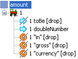
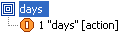
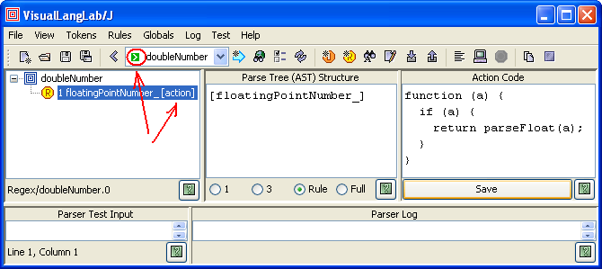
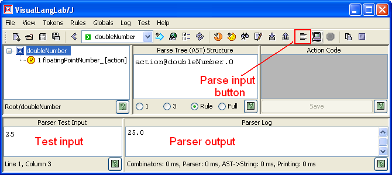

|
For Ver-10.01 or higher only! If you are using an older version, follow this tutorial instead. Beginning Ver-10.01, the title bar of the About VisualLangLab dialog box displays the version number. The latest jar file can be downloaded here: VLL4J.jar. |
The title of this article is a vestige from the time (version 7.x) when VisualLangLab was written in Scala, and was effectively a rapid development environment for parsers created with Scala's parser combinators. The current version (10.xx) is written in pure Java, but retains a strong design Relationship with Scala Parser Combinators. Parsers created with the two technologies therefore have strong similarities, and VisualLangLab is still an effective exploratory tool for someone planning a parser written in Scala. A comparison of the two approaches can be found in Pros and Cons below.
This tutorial highlights VisualLangLab's features by recreating the Payroll External DSL described on page 240 of Programming Scala. The following figures show how it represents some rules of that parser.
| amount | days | deductItems | deductKind |
|---|---|---|---|
|  |  | |
|
Another tutorial that uses examples from the book The Definitive ANTLR Reference can be found in A Quick Tour. A simpler tutorial is available at Grammar without Tears2.
To run VisualLangLab, just download VLL4J.jar and double-click it in a file-browser. Linux, Mac OS, and UNIX users may have to enable execution first (chmod +x VLL4J.jar). Alternatively, you can enter "java -jar VLL4J.jar" at a command prompt.
When started, VisualLangLab displays the GUI shown in Figure-2 below. The menus and buttons are explained as needed, but a full description can also be found at The GUI. All toolbar buttons have tool-tip texts that explain their use.

Figure-2. The VisualLangLab GUI
The display areas of the GUI are used as described below.
The only prerequisite for running VisualLangLab as described above is a 6.0+ JRE. No other tool or software is required.
In the book (Programming Scala), the parser-rules are organized in top-down fashion. But here, we start at the bottom with doubleNumber, and work our way up, creating some of the parser-rules and demonstrating most of VisualLangLab's features. The complete parser is also included as a sample grammar within the GUI (select "Help" -> "Sample grammers" -> "PSWP-Payroll-Parser-Combinators" from the main menu).
The book's code starts by importing JavaTokenParsers. VisualLangLab has no JavaTokenParsers equivalent, but we can simulate the effect of the import by creating three regex tokens (decimalNumber, floatingPointNumber, and stringLiteral).
To create the token decimalNumber click the New regex toolbar button ( ), enter the text shown below into the dialog presented, and click the "OK" button as in Figure-3. Token creation is explained in greater detail in Creating Tokens.
), enter the text shown below into the dialog presented, and click the "OK" button as in Figure-3. Token creation is explained in greater detail in Creating Tokens.
decimalNumber_ (\\d+(\\.\\d*)?|\\d*\\.\\d+)
Figure-3. Creating the decimalNumber token
Repeat the same procedure twice more to create floatingPointNumber and stringLiteral. The strings to be entered into the New regex dialog are given below.
floatingPointNumber_ -?(\\d+(\\.\\d*)?|\\d*\\.\\d+)([eE][+-]?\\d+)?[fFdD]?
stringLiteral_ \"([^\"\\p{Cntrl}\\\\]|\\[\\/bfnrt]|\\\\u[a-fA-F0-9]{4})*\"Observer that in all three cases described above, an underscore (_) has been appended to the token name. The reason for this is explained at Builtin Lexical Analyzer below.
This is a very simple parser-rule, and just matches one token unconditionally.
To create the new rule click the New rule button
( ),
and enter doubleNumber into the dialog box presented as in Figure-4 below.
Clicking the dialog's OK button creates a new rule with just a
Root node (
),
and enter doubleNumber into the dialog box presented as in Figure-4 below.
Clicking the dialog's OK button creates a new rule with just a
Root node ( ).
).

Figure-4. Creating the doubleNumber parser-rule
Now right-click the Root node, and select Add -> Token from the popup context-menu. Another dialog with the names of available tokens is presented as shown on the left side of Figure-5 below. Select floatingPointNumber_ and click the OK button. Your almost-complete parser-rule should look like the right side of Figure-5 below.

Figure-5. Selecting the floatingPointNumber_ token
Finally, we need to add some action-code. Select (click) the floatingPointNumber_ token ( ), and paste the code given below into the text area under Action Code as in Figure-6 below. Click the Save button (enabled when the content of the action-code area changes). Observe that this adds the action annotation (near red arrow) to the floatingPontNumber_ token. The rule-name (doubleNumber) in the toolbar's dropdown list is also given a small green arrow-icon to indicate that the rule has an action function.
), and paste the code given below into the text area under Action Code as in Figure-6 below. Click the Save button (enabled when the content of the action-code area changes). Observe that this adds the action annotation (near red arrow) to the floatingPontNumber_ token. The rule-name (doubleNumber) in the toolbar's dropdown list is also given a small green arrow-icon to indicate that the rule has an action function.
function (a) {
if (a) {
return parseFloat(a);
}
}Action-code functions are explained further in Action Code below.

Figure-6. Adding action-code to the doubleNumber rule
This parser-rule uses two custom literal tokens (is and are) which must be defined first. Proceed as follows.
 icon),
enter "
icon),
enter "is" into the dialog presented, and click the OK button
(as in Figure-7 below)are" insteadThe above actions create two literal tokens with names "is" and "are" respectively. These names will be used to refer to the tokens from rules as seen in Figure-8 below.

Figure-7. Creating the is and are tokens
This parser-rule uses a Choice
(the  icon) as its top-level node.
A Choice is VisualLangLab's equivalent of the
| combinator. But unlike | it accepts an arbitrary number (>= 2) of
child nodes, and returns an AST that remembers which child node matched the input
(see example below).
To create the parser, perform the following steps.
icon) as its top-level node.
A Choice is VisualLangLab's equivalent of the
| combinator. But unlike | it accepts an arbitrary number (>= 2) of
child nodes, and returns an AST that remembers which child node matched the input
(see example below).
To create the parser, perform the following steps.
),
enter toBe into the dialog presented, and click its OK button) of the new rule, and select Add -> Choice from the context menu. A Choice node () is added to the root node (as in the left and middle parts of Figure-8 below)Your toBe parser-rule should now look like the one on the right side of Figure-8 below.

Figure-8. The toBe parser
The grammar-tree's node icons are designed to be intuitive, but you can find a guide to all the icons in Grammar Tree Icons and Annotations
This parser-rule uses a Sequence
(the icon)
as its top-level node.
A Sequence is VisualLangLab's equivalent of
the ~, <~, and ~> combinators. But unlike the ~ family,
it accepts an arbitrary (non-zero) number of child nodes,
and the AST returned is just a Java array which is much simpler to handle
than a nested instance of case class ~.
To create this parser, perform the following steps.
),
enter percentage into the dialog presented, and click its OK button) and select
Add -> Sequence from the context menu. A Sequence node
() is added to the root node
Examining the arrows (~> and <~) in the definition,
we can deduce that only the result of matching doubleNumber is desired to
be retained. All other tokens are to be dropped from the AST. You can drop
tokens from the sequence's AST by right-clicking each node's icon and selecting
drop from the context menu (as shown on the left side of the figure).
Remember not to drop the doubleNumber node.
Your finished parser-rule should now look like the right side of Figure-9 below.

Figure-9. The percentage parser-rule
Observe that the icons of dropped nodes are overlaid with a black line from the lower-left to the upper-right. The annotation drop is also added after the name of the node.
Finally, add the action-code: select (click) the Sequence icon (), and paste the Javascript code given below into the text area under Action Code. Then click the Save button.
function (arg) {
if (arg !== null) {
return VLL.grossAmount * (arg / 100);
}
}Though different from the original text, this action function is actually functionally equivalent, as explained in Action Code below. Your finished parser-rule should look like the one in Figure-9 above.
This parser-rule uses a custom regex token (days?) which must be defined first. Proceed as follows.
icon),
enter "DAYS days?" into the dialog presented, and click the OK button
(as in Figure-10 below). Here days? is a regular-expression
Pattern),
enter days into the dialog presented, and click its OK button)
and select Add -> Token from the context menu.
Select DAYS from the dropdown list, and click the OK button

Figure-10. Creating the DAYS tokens
Finally, add the action-code by selecting he DAYS icon
(),
and pasting the code
given below into the text area under Action Code. Then click the Save button.
function (a) {
if (a) {
return 1;
}
}Action-code function design and use is explained in Action Code below. Your finished parser-rule should look like the one on the right side of Figure-10 above.
This section demonstrates the simplicity and power of VisualLangLab's manual testing facilities. It shows how you can effortlessly validate every little addition or change without using or learning any other skills or tools.
To manually test doubleNumber proceed as follows. Use the toolbar's combo box to select doubleNumber as in Figure-11 below.
 )
)If you do not see any red text (as in Figure-13 below) in the Parser Log area, your parser executed without errors. But that alone is not enough, you should verify that the result returned (the 25.0 in Figure-11, for example) is the value expected.

Figure-11. Testing the doubleNumber parser
This test passes as 25.0 is the expected result.
Before you start to enter test data for toBe take a moment to understand the structure of its output. All parser-rules return an abstract syntax tree (or AST) whose structure depends on the arrangement and properties of the grammar-tree's constituent nodes as explained in AST Structure. The text area under Parse Tree (AST) Structure displays the expected AST structure of the selected grammar-tree node. Figure-12 below tells you that the returned result is one of two array objects (depending on what was found in the input).

Figure-12. The AST of the toBe parser-rule
Figure-13 below shows the result of exercising toBe with three different inputs: is, are, and other.
 |
| Figure-13. Validating toBe with different inputs |
This set of tests too pass as all three test cases produce the expected result.
The remaining parser-rules, except one that uses a repsep and is described fully below, present no new difficulties and we leave them as an exercise for the reader. You can verify the parser you create by comparing it with the bundled sample grammar (select "Help" -> "Sample grammers" -> "PSWP-Payroll-Parser-Combinators" from the main menu).
This parser-rule uses a RepSep
(the  icon) as its top-level node.
To create this rule proceed as follows.
icon) as its top-level node.
To create this rule proceed as follows.
),
enter deductItems into the dialog presented, and click its OK button) and select
Add -> RepSep from the context menu (as on the left side of Figure-14 below).
A RepSep node
() is added to the root nodeYour finished rule should look like the one on the right side of Figure-14 below.

Figure-14. The deductItems parser-rule
Action-code is written as anonymous funtion literals in Javascript. You can find detailed guidelines at Action-Code Design.
The purpose of weekDays is to check the input, and return the integer 5 if either weeks or week is found, and the integer 1 if days or day is found. As described in Action Code below, action-code functions must handle two cases: a null argument, and a non-null (real AST) argument. weekDays' action function only needs to handle the non-null argument case. (Of all the examples in this article, only the action-code in Wrapper with Actions below needs to handle the null-argument case.)
To understand the logic of the action-code you must know the structure of the AST passed in (as the argument a). The rule's AST structure is depicted in the text area under Parse Tree (AST) Structure. AST Structure describes AST structuring principles in general.

Figure-15. The weekDays action-code function
The AST structure and action-code of the two subordinate rules used by weekDays (weeks and days) is shown in Figure-16 below.
 |
 |
Since weekDays' subordinate rules return the required values (5 and 1),
its own action-code only needs to pass on the value recieved. Based on the
above details we know that the AST passed in to weekDays is one of
these two values: Object[] {0,5}, and Object[] {1, 1} (the
second member of each array being the value from the subordinate rules).
So weekDays merely needs to return the second member of the array.
Figure-17 below illustrates the action-code associated with the rule percentage.
This function uses a non-local reference VLL.grossAmount.
As described in Action-Code Design,
the symbol VLL refers to a common global object available to all action-code
functions, and should be used as a repository for all parser-specific features (methods and
functions) and state (data). Wrapper with Actions below
illustrates how VLL is equipped with required features before
testing begins.

Figure-17. A Javascript action-code function
The function does not have any setting-up role, so does not have to handle the
null-argument case. The value of arg it receives is the
output from the rule doubleNumber (see AST structure).
It returns the computed percentage value.
Testing is much simpler in VisualLangLab than in virtually any other tool. Ad Hoc Testing - A Short Detour showed how effective ad hoc manual testing can be in certain situations. VisualLangLab also supports automated testing, and the following sections describe two different approaches for different situations.
This approach uses an additional parser-rule to wrap the main (or top-level) parser-rule with before and after scripts. The before script sets up initial conditions before the main parser-rule is invoked, and the after script validates the parse-tree returned by the main parser-rule. Figure-18 below shows details of the wrapper rule PaycheckTester used for testing this parser. To display the before and after scripts (actually parts of a single action-code function) you must select (click on) the Reference node that points to the Paycheck parser-rule. Parser-rules designed for testing using this technique are automatically distinguished with a special icon in the toolbar's dropdown list.
If you have not read Action-Code Design and AST Structure, please do so now!

Figure-18. Wrapper rule for automated testing
The Javascript function with the before and after scripts is reproduced below for clarity. The setup part of the function (null-argument part) performs two functions:
grossSalary, and creates the
method salaryForDays in the global object VLL.
(Javascript's dynamic nature allows it to add data and function members
to existing objects at run-time)The test part of the code checks the structure of the parse-tree returned by the main parser, and prints out an appropriate message.
function (arg) {
if (arg === null) {
//****************************************
// SETUP actions
//****************************************
// global variables and functions ...
VLL = {};
VLL.grossSalary = 500.0
VLL.salaryForDays = function (days) {
return VLL.grossSalary * days;
}
// Input text for parser ...
vllParserTestInput.setText(
"paycheck for employee \"Buck Trends\"\n" +
"is salary for 2 weeks minus deductions for {\n" +
" federal income tax is 25. percent of gross,\n" +
" state income tax is 5. percent of gross,\n" +
" insurance premiums are 500. in gross currency,\n" +
" retirement fund contributions are 10. percent of gross\n" +
"}"
)
} else {
//****************************************
// TEST actions
//****************************************
if (arg.length === 3) {
var error = ""
var empl = arg[0];
if (!empl.equals("Buck Trends")) {
error += "BAD empl (" + empl + "), ";
}
var gross = arg[1].doubleValue();
if (gross !== 5000) {
error += "BAD gross (" + gross + "), ";
}
var deduct = arg[2].doubleValue();
if (deduct !== 2500) {
error += "BAD deduct (" + deduct + "), ";
}
if (error === "") {
return "OK";
} else {
return error;
}
} else {
return "BAD AST structure";
}
}
}
To run this test just click the Parse input () button. You should see the text shown below appear under Parser Test Input, and then "OK" appears in the Parser Log area.
paycheck for employee "Buck Trends"
is salary for 2 weeks minus deductions for {
federal income tax is 25. percent of gross,
state income tax is 5. percent of gross,
insurance premiums are 500. in gross currency,
retirement fund contributions are 10. percent of gross
}
You can also try some error cases. The table below shows some changes (in red) you can make to the input, and the corresponding result messages you should see. To change the input given to the parser (when the Parse input button is clicked) you need to change the input-string in the action code shown above. The input string is the argument to the vllParserTestInput.setText(...) function just after the comment // Input text for parser ....
| Input | Result |
|---|---|
| ... employee "Duck Trends" ... | BAD empl, |
| ... salary for 22 weeks minus ... | BAD gross, BAD deduct, |
| ... premiums are 900. in ... | BAD deduct |
The variable vllParserTestInput is a reference to the GUI's JTextArea from which the parser under test obtains input (and into which test input is normally entered manually). More information about this can be found under
Predefined Variables.
It is possible to use JUnit (or any of its successors) to create a test suite for a parser. An description and example of the approach can be found in Using JUnit.
VisualLangLab uses a custom builtin lexer that is significantly more effective than the literal(String) and regex(Regex) methods of Scala's RegexParsers class. The behavior of this lexer is similar to those in more sophisticated parser development tools, and is described in Built-In Lexer.
The builtin lexer can however be too powerful for some applications -- such as this one. For these cases, ending the name of tokens in an underscore (_) is recommended. In handling these tokens, the parser bypasses the builtin lexer and falls back to a RegexParsers-like capability.
This approach is required (for the three imported tokens) here because the builtin lexer works best when the regex definitions are distinct, and multiple regex tokens do not match the same lexeme. But the regular expressions used in JavaTokenParsers are such that floatingPointNumber subsumes both decimalNumber and wholeNumber, and decimalNumber itself subsumes wholeNumber.
The table below lists the pros and cons of using VisualLangLab compared with a hand-written parser based on Scala parser combinators.
| Aspect | Pros | Cons |
|---|---|---|
| Visual | Completely visual. Code never required, except if semantic predicates are used (but they are rare) | - |
| All IDE functions provided - file, edit (tokens, rules, globals), test-run, input-output | - | |
| Lexical Analyzer | The builtin lexer works like lexical analyzer generators, but does not require any separate steps or tools | - |
| Token definitions may use the full regular-expression language of the JDK's Pattern | - | |
| Unlike RegexParsers, all literal tokens are treated as reserved keywords that have higher priority than regex tokens. The next lexeme provided by the lexer is always the longest possible part of the input that matches any known token | - | |
| RegexParsers compatible behavior can also be obtained if required | - | |
| - | Performance is poorer than RegexParsers though no measurements have been made | |
| AST | Defined and created automatically following a well-defined and documented convention for AST structure. The AST is complete and unambiguous | - |
| The AST is defined using common Java types, so no specialized knowledge is needed. Programs in any JVM language can use the AST. | - | |
| Action Code | Completely separated from grammar text. Written as function literals invoked in a well-defined and documented protocol. Action code functions may access their environment via a defined and documented set of predefined global variables. | - |
| Never required to be embedded in parser text | - | |
| - | Lexical context of the parser is not available to action code. However, since this restricts the action-code to its own sand-box it can be seen as an an advantage too. | |
| RegexParsers Compatibility | Defines new layer (SimpleLexingRegexParsers) that adds value to RegexParsers's capabilities | - |
| The usual RegexParses interface is exposed to API users | - | |
| - | Not directly compatible, and such code can not be generated | |
| API | Parser developed in the VisualLangLab IDE may be saved to a file, and subsequently used from a host program via the API | - |
| API usable from any JVM language | - | |
| Parser does not have to be compiled or linked into host program. The parser can even be modified separately without affecting the host program (provided the AST structure is not changed) | - | |
| API based on the familiar RegexParsers interface for convenience | - | |
| Testing | Includes comprehensive builtin support for ad hoc testing. No additional tools, code, or skills are required. | - |
| Test drivers for black-box testing are easily created and run within the IDE | - | |
| Any (or all) rules can be trace-enabled at the click of a button. Even individual grammar-tree nodes can be traced. | - |